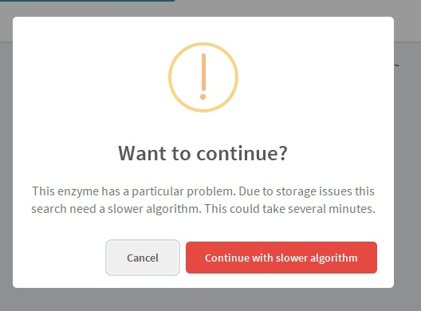

Enter Brenda User
Without a valid Brenda User, we cannot do any query, particularly, the first one: the Enzyme query.
.jpg)
This is an application on development, hence, we are still dealing with a few minor issues. Some of them are identified and are presented as Unavoidable errors and the not identified yet can be reported on the Suggestions section. The ones that are identified, but depends on the user are presented as Avoidable errors on the section below.
If the user, on purpose or accidentally, enters an invalid input that is identified, an error is going to be announced and the action won't be done. Those kinds of error are listed here.
Without a valid Brenda User, we cannot do any query, particularly, the first one: the Enzyme query.
The entered password is invalid, but the mail is a valid Brenda User.
.jpg)
The entered mail hasn't registered on Brenda, to register, please enter on the Brenda Registration site.
To be able to get amino acids FASTA sequence, PDB, or functional parameters, an enzyme query must be done first.
Simply, if enzyme hasn't added to the query, there's no need to add more.
The visualization and the clustering analysis need functional parameters, therefore, to apply these tools, first, do a functional parameters query).
Some tools require selecting some of the functional parameters found. The number of these parameters are indicated, however, if the amount of selected parameter differs from those indicated, you're going to be notified and the action won't be done.
.jpg)
Some issues are identified, but we haven't found a solution yet. Some of them have a not reported solution, but some not. The objective of this section is to make those issues clear and make the user be aware of them.
Some enzyme has a particular problem. Due to storage issues, some search needs a slower algorithm. This is because, in order to save time, the SOAP query is made just one time per EC number, and then the answer is parsed. When there are too many sequences or organisms this can't be done, so the query must be done different and slower. You can cancel the operation or go ahead if you have enough time.
This error isn't supposed to happen, but if it does you can try again. If this error persists, please, report it on the Suggestion section.
If you click the "Report this Bug" button, you are going to be redirected to the Suggestion section, where you can report it following the given instruction.
We don't know what this happen, but it did happen several times on the tests. However, there is a simple solution. First, deactivate the "Select all" blue switch, then, select the parameters you need or reactivate the blue switch. Do the query again, in case this is still happening, repeat the process or report it in the Suggestions section.
Some visualization and analysis require too much storage. In order to be able to do them anyway and avoid the complete failure of the web site, we choose to reduce data in case the generated rows are too much to storage or to merge. This could happen on the clustering or on the paired scatter plot correlation. In the first case, the clustering is done with all the data, but the visualization doesn't. In the second situation, the visualization is due with reduced data.
To reduce the data, we eliminate the pair rows and leave the odd ones. In case there's still too much data, the process is repeated.
If this happens it can be for two reasons: 1) enzyme doesn't have data or 2) there was an error on search. You can report this, try again, make a search about the enzyme or contact us.
If any strange or unexpected thing happens, please report it on the "Suggestions section".